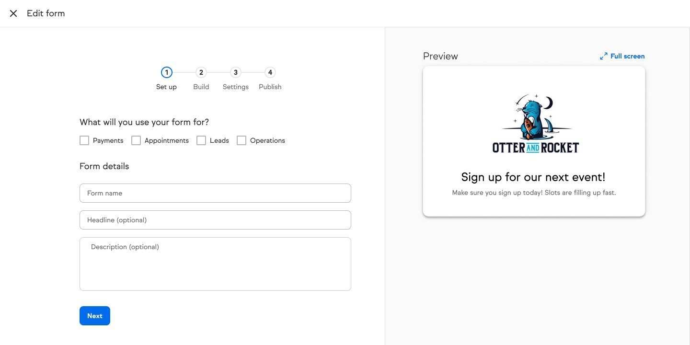
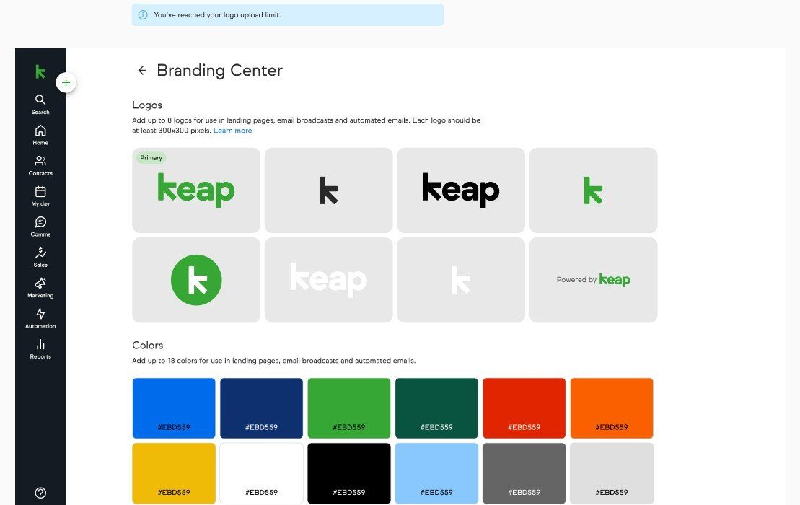

I design for
durability.
I design in systems, treat AI as a material rather than a feature, and build both with the teams who own the pieces.
Ten years in B2B SaaS platforms. Now at Keap, acquired by Thryv, leading design for two development teams on a platform serving 100K+ small businesses.



Case studies
Seven builders, one system
Seven form builders doing one job, and no single owner. I took it on as the only designer on the initiative. I argued down the assumed rebuild by showing the data models were sound, connected six years of orphaned research, and reordered the roadmap with a Kano study. All three top-ranked features shipped. The system now carries AI and MCP layers, built with the four teams it spans.
One definition, every surface
A brand lived in a document kept outside the product, so one logo change became a scavenger hunt. I replaced it with a single definition the system reads from, wrote the three rules that made it hold across sixteen dependent teams, and won the slower architecture on a design argument. Three releases shipped.
One UX, two possible backends
Design and research lead on a platform-wide listings migration across 160K locations. The vendor choice was not mine, so I made a different one: an abstraction layer that holds one UX over either backend, a usability bar built from three studies, and an AI approve-or-decline model I argued into the procurement scorecard.
Experience
Keap, acquired by Thryv Product design · platform
Platform design across forms, branding, listings and AI. All three case studies above sit in this role.
Blue Raster UX/UI design · agency
Data visualisation and geospatial products for government agencies and enterprise clients, from research through implementation.
Allego Product design · enterprise SaaS
Sales-enablement tools for an enterprise learning platform, where I built my enterprise UX and research practice.
Education
UX ManagementNielsen Norman Group
MFA, Visual Communication DesignRochester Institute of Technology · 2014 to 2016
BA, Graphic DesignUniversity of Shanghai for Science and Technology
Awards
Esri Ocean Storymap ContestFirst place · 2021
CGDA Visual Communication DesignExcellence award · 2016
My approach
Measure before designing
I pull the usability scores, support volume and usage data first: a baseline is the only reason I can tell you what changed.
Decisions over deliverables
I document the why as carefully as the what, so decisions survive handoffs and re-orgs.
Design that carries business value
I argue in the currency the room uses: cost, risk, roadmap slots, procurement criteria.
Craft at the detail level
I design the states nobody demos: errors, empty accounts, and the day-one account whose data already disagrees with itself.
Denise Barrett
I have only ever worked on B2B SaaS platforms: the layer other teams build on top of.
That layer fragments quietly. Every team ships its own version of a shared thing, nobody owns the definition, and by the time it is anybody’s problem there are seven of them. The work I want is the work where you cannot just redraw the screen. You have to change what the system believes, and then bring along everyone who already built on the old belief.
I have done that inside a product org, inside an agency walking into somebody else’s domain, and across teams that did not report to me. The constant is the same: get the definition right first, and most of the arguments after it stop being arguments.
I lead without needing to own it. Sixteen dependent teams once read from a definition I wrote, and none of them reported to me. I mentor the same way: I took a junior designer from executing handed-down work to owning their own area, and they now run it directly with research, content and the partner team instead of through me.
Let’s talk about
the system you’re building
If your platform has drifted into a dozen versions of the same thing, that’s the work I do best.
Looking for platform, design systems or AI product work at a B2B SaaS company. Remote US.